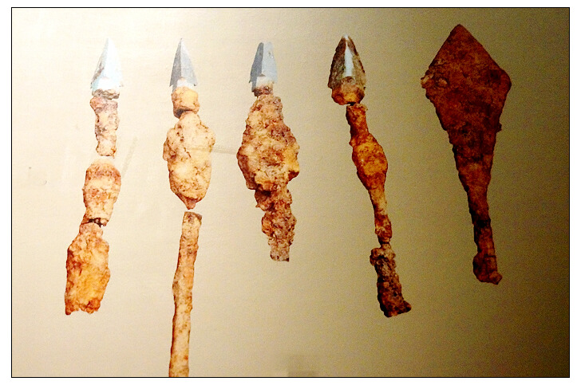
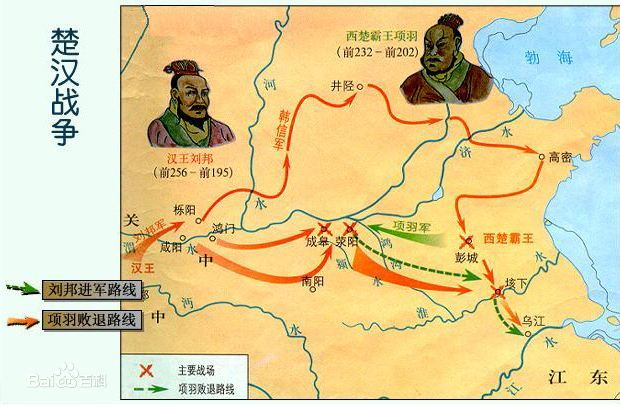

垓下遗址，为秦末汉初楚汉垓下决战时项羽大本营和汉代交国、汶县治所故地， [1] 又名霸王城。西汉时曾作为洨县县城址。
垓下遗址的遗址年代主要是大汶口文化晚期和汉代两个时期， [3] 遗址主体为一座城址，平面呈不甚规则的弧角长方形，四周有城墙残存，城墙轮廓清晰，除西城墙遭沱河故道冲刷受一定破坏外，其余各墙保存较好，城内总面积约15万平方米。城墙外有濠沟环绕，濠沟宽度15米至30米不等。垓下遗址整体为台地地貌，沱河由遗址西侧绕至北侧向东流去，其上南半部现为居民住地，北半部为耕地。
1980年，垓下遗址被固镇县人民政府公布为县级文物保护单位， [3] 1986年7月3日，被安徽省人民政府公布为省重点文物保护单位， [2] 2013年，被国务院公布为第七批全国重点文物保护单位。
历史沿革西汉时，垓下遗址曾作为洨县县城址。
公元前202年，项羽刘邦在垓下遗址决战。
20世纪50年代，垓下遗址被发现。
1976年12月，在城址南墙外曾一次出土了3856枚楚国铜贝币——蚁鼻钱。
1991年5月11日，固镇县文物部门在城址南一公里处抢救清理处二座石室墓M2，M3。
2007年，为了明确遗址的年代和内涵，编制遗址保护规划，经国家文物局批准，由安徽省文物考古研究所主持、固镇县文物管理所配合，开始对遗址进行钻探和第一次发掘。
2008年—2009年，安徽省文物考古研究所、固镇县文物管理所连续对遗址进行了发掘工作，3次发掘共揭露面积1000余平方米。
遗址特点垓下遗址座落在台地之上，城墙依地势而建，夯土筑成，呈不太规整的四方形。城墙的每个拐角都筑成弧形,西城墙微弯，长340米，其中部被沱河旧河道冲毁。其余三面墙均为直线形。其中南墙长240米，东墙长260米，北墙长260米。因历代取土和风雨剥蚀造成城墙坍毁严重，几乎与城内地面相平，仅微微隆起呈斜坡状。但仍比城外平地高2.2—2.5米左右。城外东、西、南三面有护城河与沱河相通，形成城池的一道防线。
城内南半部为居民生活区，北半部为耕作区，城内地表随处可见到残破的绳纹筒瓦片，云纹瓦当片、板瓦片、碎青砖块、陶器碎片等。 [2] 城外为农田，沱河水从垓下遗址西南向北流过霸王城西、北城墙外，直流向东，护城河与沱河相通，城南门与濠城镇霸王街相连。
文物遗存在垓下遗址发现了保存较好的始筑于大汶口文化晚期、汉代增筑的城墙，还发现大汶口文化晚期至龙山文化初期排房1组、台形基址1座，陶窑1座、墓葬11座大汶口文化晚期至龙山文化初期及秦汉时期的灰坑74个、沟12条汉代开凿大型水槽1处、水井3口宋代墓葬2座等。
1976年在城南濠城村冬菜圆，出土了一套青铜明器：鼎、盒、壶、钫、甑、灯、灶等。
1991年5月11日，在城址南一公里处抢救清理处二座石室墓M2，M3。M2出土了玉衣片、染炉、青铜镜、海贝壳、铁剑、镇墓兽；M3出土了成套的造型精美、色泽如新的釉陶器，有壶、瓶、罐鼎、楼、仓、猪圈等，并有青铜鼎、洗、镜等出土。
垓下遗址历年出土的文物还有：陶器鼎、壶、罐、瓶、仓、灶、井、楼、圈等；青铜器鼎、盒、洗、钫灶、镳、壶、匝、带勾、鎏金龟、镜等；锏钱有秦半两、五铢钱、新莽布币、契刀五百、大泉五十等。以及大铁釜、云纹玉壁、玉蝉等器物。
历史文化垓下之战
公元前202年，楚汉战争后期，项羽率十余万大军退至垓下，以河为屏，堆土为营，深堑拒敌。韩信十面设伏，迫使项羽节节挫败，疲于奔命，又令各营夜奏楚乐，四面楚歌令项羽军心涣散。项羽见大势已去，夜率八百子弟垓下突围，败至乌江，自觉“无颜见江东父老”，遂乌江自刎，年仅三十一岁。
垓下之战，是楚汉相争中决定性的战役，它既是楚汉相争的终结点，又是汉王朝繁荣强盛的起点，更是中国历史上具有里程碑意义的转折点，它结束了秦末混战的局面，统一了中国，奠定了汉王朝四百年基业。
| 所属时代： | 新石器时代至汉 |
| 占地面积： | 约15万平方米 |
| 适宜旅游季节： | 春夏秋较佳 |